CS 428 Fall 2022
PROJECT 2 - OUR HOUSE of Aladdin
A Virtual Reality Project made using Unity and Virtual Reality Toolkit(VRTK), to give an immersive experice to interact an explore an Aladdin Themed Land inside the UIC's Future CS Building's Atrium
Pranav Rathod
Project 2
November 26, 2022
To use this app you must have Unity 2021.3.6f1 (go here https://unity3d.com/get-unity/download/archive and find the version and download via unity hub) and VRTK version 4 (it is already included in the files so no need to worry about installing this) and download the app files from the git repository
Link To The Project : https://github.com/pranavsrathod/OurHouse
After extracting the zip file, open the file in unity and go into assets/CoffeeShopStarterPack/Scenes and open up the CoffeeShop Scene. From here you can see all the files that we used and you can begin using the app in the editor. The scene is of a comic/game kiosk in the new CS building that’s selling various game and comic related items.
To be able to run the app, make sure you have CameraRigs.UnityXRPluginFramework disabled and you have CameraRigs.SpatialSimulator enabled. Once the scene builds, use WASD to move around and the mouse to look around. You can also use 2 and 3 to take control of the left and right controllers respectively and move them around with WASD and the mouse. You can grab and interact with various objects in the scene as well. To run the app in VR, first you need to have CameraRigs.UnityXRPluginFramework enabled and CameraRigs.SpatialSimulator disabled.
Then connect your oculus headset and under Unity Build Settings make sure you are building for the Android Platform and the particular Quest you connected should show up under the Run Device list of compatible connected devices. If the Quest headset does not show up in the list you may need to unplug and re-plug the USB cable and again tell the quest to accept the connection to the laptop. You may also need to make sure USB debugging is enabled on the quest.
You can check this by clicking on the Quick Settings menu on the left side of the thin menu, then clicking on the settings menu on the upper right, then scrolling down in the menu on the left to Developer and turning on the USB Connection Dialog. After clicking build and run, wait for the app to build and it should start automatically on the quest. From there you can experience the scene in VR either via walking around the scene or teleporting around, being able to interact with the same objects as you could when running the scene in the editor with the oculus touch controllers.
Project Video
Our House of Aladdin
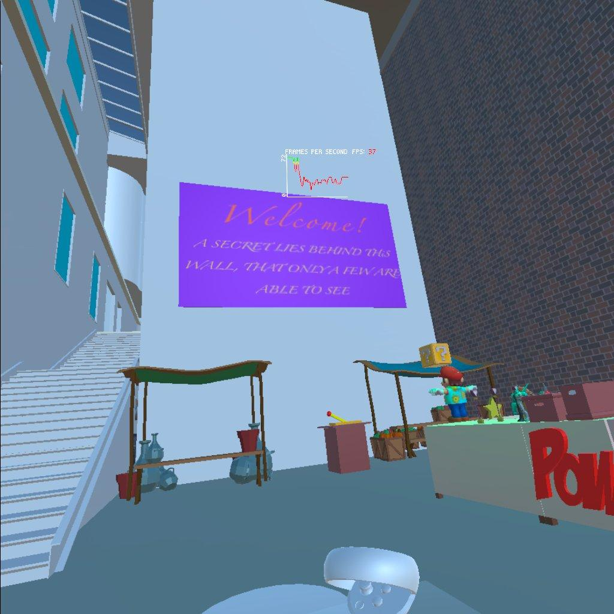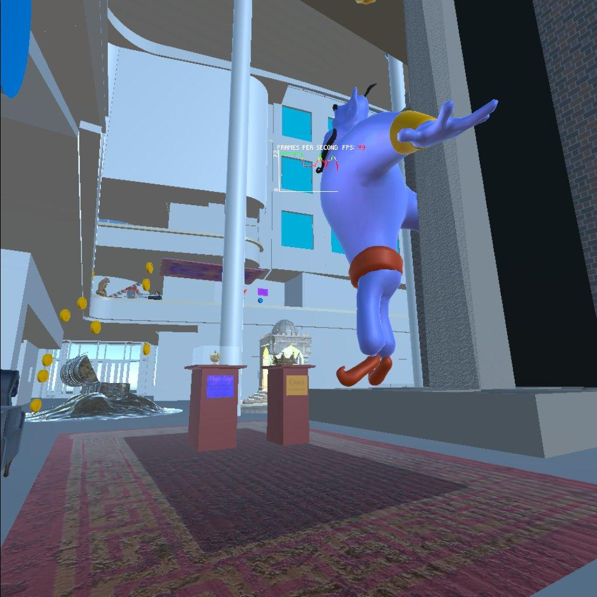
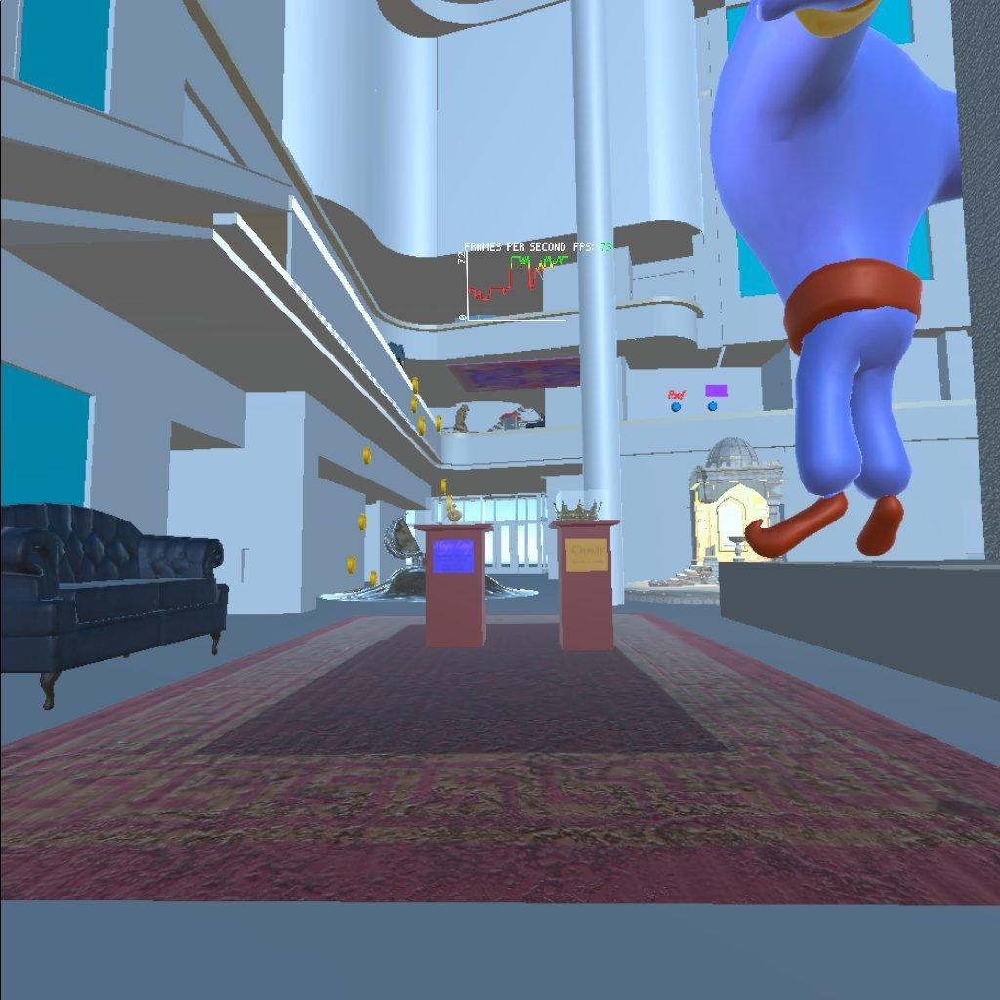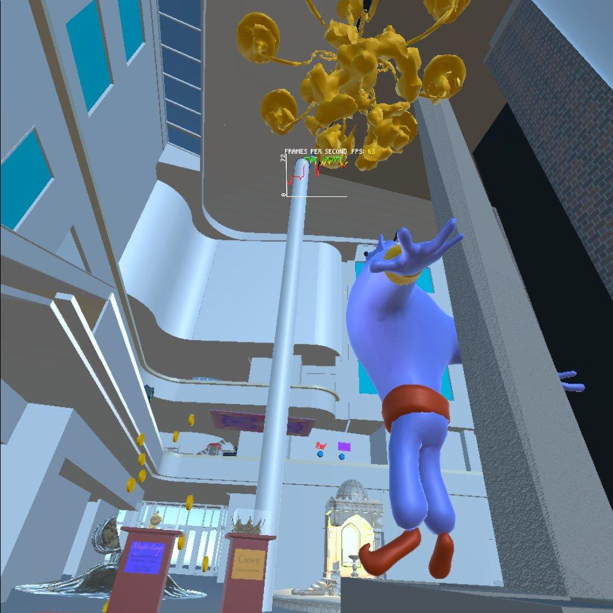
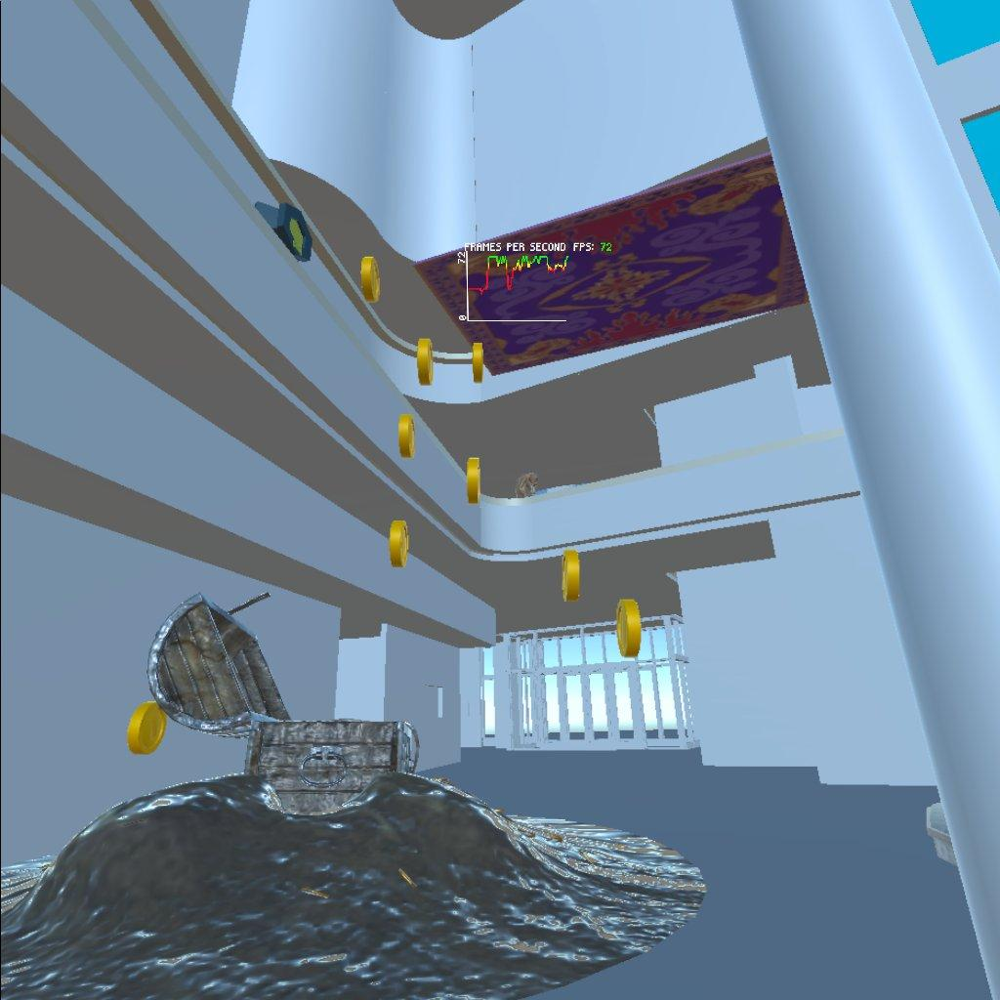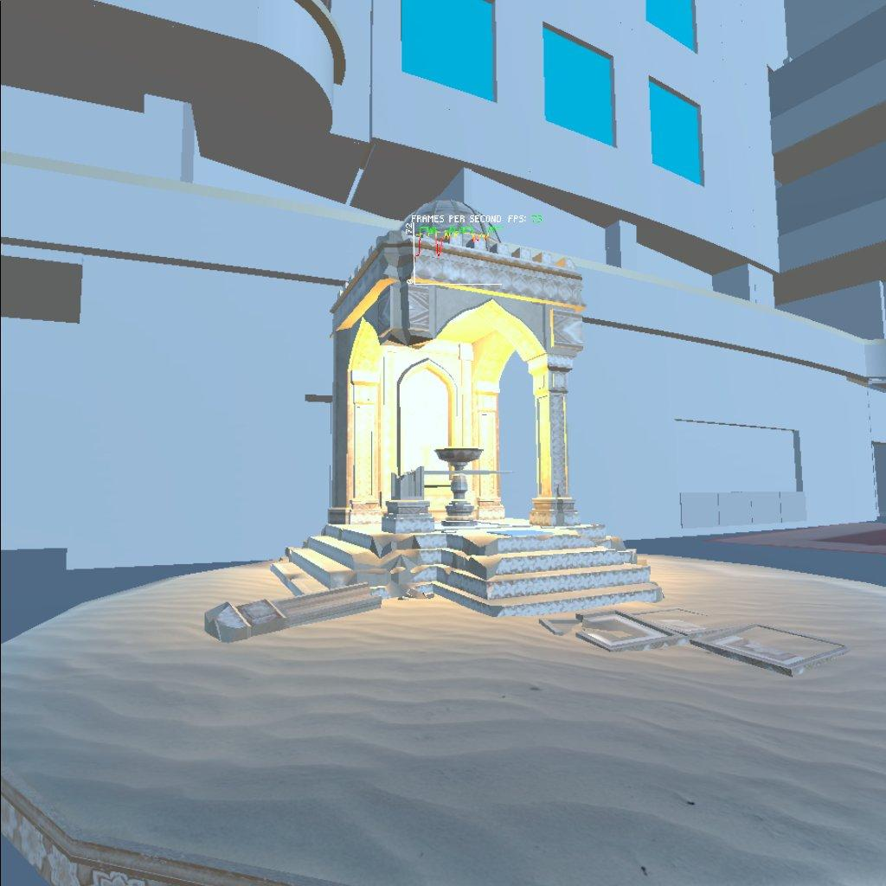
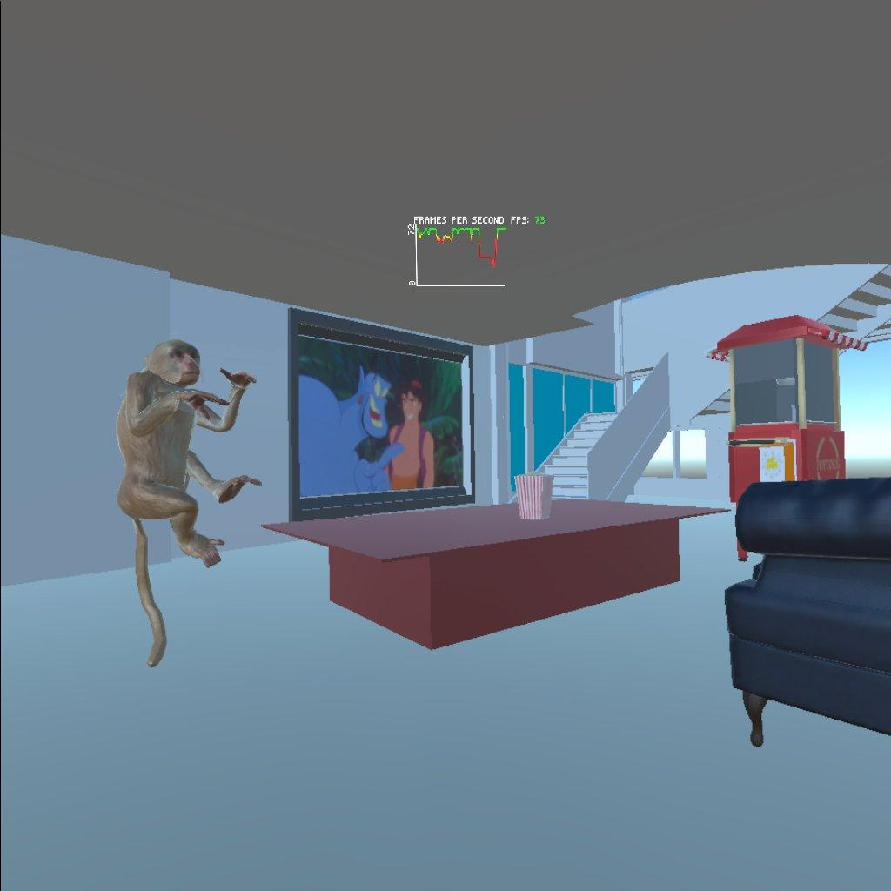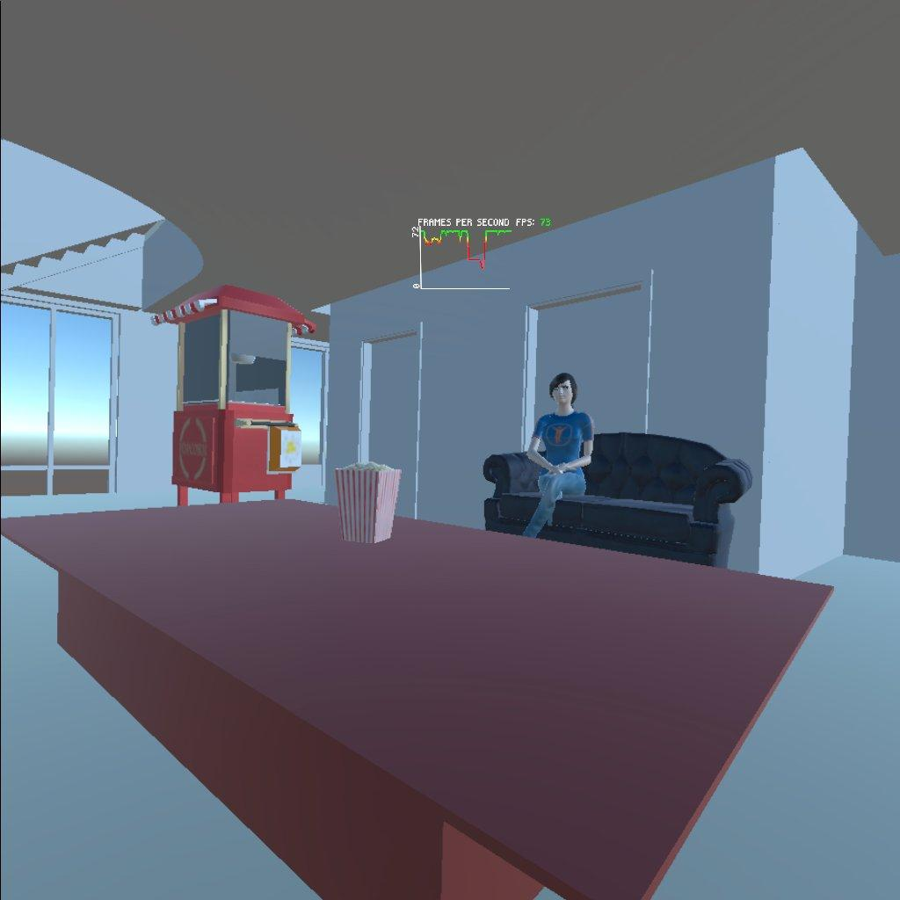
How you would use this kind of technology to introduce someone (say your parents, or a politician) to a new building before it was finished.
I remember when I used to pick up the morning news paper I used to see all these front page cover advertisements of new property launches and deals/offers that came if you decided to invest in the property as soon as possible, I was so fascinated by how fantastical it seemed to see a mock rendering, of how the building, the part and the clubhouse would like way before it was built and imagine my life there. Everything that was built seemed so futuristic when seen as a mock up image and a few years later I would walk by the same building that was advertised and be reminded of the first time I saw it in the newspaper.
With the power of virtual reality people have gotten a more immersive experience to picture themselves in a space, I think when a person looks at a 2 Dimensional Image of a building it is hard to imagine the scale at which the objects are meant to be. In other words, things seen in images may trick people into thinking that the place is larger than it actually is. Leveraging Virtual Reality helps people understand the space better than looking at plane images or even a miniature 3D Figure.
I gained a lot of insight into sizes and scales with respect to the human eye. For example objects were fairly scaled up when I was placing them in the scene but in VR mode, they were either too small or too large. Being able to see things in Virtual Reality I was able to map things out the way I wanted it to be. This would be much harder to plan out on a piece of paper.
When an Interior Designer or an Architect starts off modeling the way they want something they have to keep track of measurements of the size of the room and map things out respectively, this involves math in terms of how much space would some object occupy with also considering if it may be obstructing something. Having VR helps ease this task when it comes to the complexity of people who may find it difficult to picture things spatially.
The new CS building by UIC for example is an excellent example of getting people excited about things offered at UIC especially the computer science, Not only is the new Computer Science building a strong point to attract new coming people to UIC but also the VR, being made by the UIC CS and EVL is a strong notice to people to be interested in the courses being offered.
5 Custom Models
-
Showcase
Interactiveness : Not Interactive
Sound : No sound
Animation : No animation
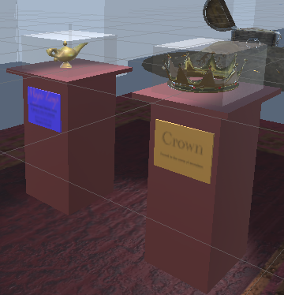
-
Teleporting Button
Interactiveness : When Touched Teleports you to another place in the atrium
Sound : No sound
Animation : No animation
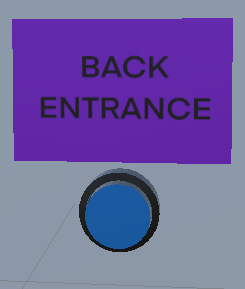
-
Lever
Interactiveness : Can be grabbed, Moved To Make the Wall Dissapear
Sound : No sound
Animation : No animation
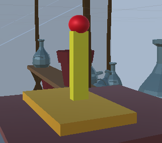
-
Magic Carpet
Interactiveness : Not Interactive
Sound : No sound
Animation : Moves Back and Forth

-
Television
Interactiveness : Not Interactive
Sound : When Come Near, Plays "Friend Like Me" from Aladdin
Animation : No animation
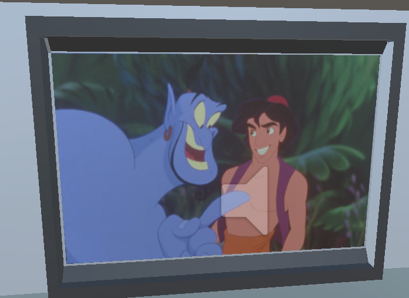
-
Pop Corn Machine Buttons
Interactiveness : Can be touched to spawn Popcorn Bucket in the Pop Corn Machine Button
Sound : When Touched, plays Ding Sound
Animation : No animation
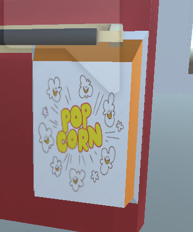<
-
Table
Interactiveness : Cannot be Grabbed but able to keep things on, stand on
Sound : No Sound
Animation : No animation
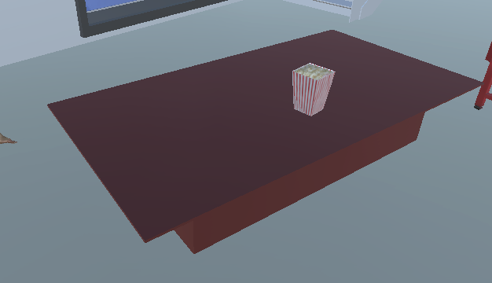
Citations
10 Models Sourced From the Internet
-
"Stylized treasure Chest" (https://skfb.ly/6XxuK) by mRiot is licensed under Creative Commons Attribution (http://creativecommons.org/licenses/by/4.0/).
Interactiveness : Not Interactive
Sound : No sound.
Animation : No Animation
-
"Magic Lamp PS1" (https://skfb.ly/oysWz) by JF-Linter is licensed under Creative Commons Attribution (http://creativecommons.org/licenses/by/4.0/).
Interactiveness : Not Interactive
Sound : No sound.
No Animation
-
""Market Props" (https://skfb.ly/oxT7p) by Wouter Yntema is licensed under Creative Commons Attribution (http://creativecommons.org/licenses/by/4.0/).
Interactiveness : The Fruits and Pots Can be Grabbed
Sound : NO sound
Animation : No Animation
-
"Alchemist carpet" (https://skfb.ly/orOoE) by Jopii is licensed under CC Attribution-NonCommercial-NoDerivs (http://creativecommons.org/licenses/by-nc-nd/4.0/).
Interactiveness : Not interactive
Sound: No Sound
Animation: No Animation
-
"Golden crown" (https://skfb.ly/owVrF) by Pieter Ferreira is licensed under Creative Commons Attribution (http://creativecommons.org/licenses/by/4.0/).
Interactiveness : Not Interactive
Sound : No sound.
Animation: Spins
-
"Arabic temple diorama" (https://skfb.ly/o99yZ) by maheylah is licensed under Creative Commons Attribution (http://creativecommons.org/licenses/by/4.0/).
Interactiveness : Not Interactive
Sound : No sound.
Animation: No Animation
-
"Vintage chandelier (Object Capture)" (https://skfb.ly/oowZN) by Emm is licensed under Creative Commons Attribution (http://creativecommons.org/licenses/by/4.0/).
Interactiveness : Can be Grabbed
Sound : No sound.
Animation: No Animation
-
"Pot With Gold" (https://skfb.ly/6ZuLI) by Víctu is licensed under Creative Commons Attribution (http://creativecommons.org/licenses/by/4.0/).
Interactiveness : Not Interactive
Sound : No sound.
Animation: No Animation
-
"Popcorn Bucket" (https://skfb.ly/oz88A) by beastybevan is licensed under Creative Commons Attribution (http://creativecommons.org/licenses/by/4.0/).
The Skin Replaced with Ish’s Minecraft Character Skin to give it a personal touch.
Interactiveness : Not interace
Sound : The Model it self does not make any 3d sound
Animation : No Animation
-
"Popcorn Machine" (https://skfb.ly/ouGJy) by ezgi bakim is licensed under Creative Commons Attribution (http://creativecommons.org/licenses/by/4.0/).
Interactiveness : The Button on the Pop corn machine spawns a new pop corn buckets
Sound : Popcorn Popping Sound, Ding when the a new popcorn bucket is spawned
Animation: No Animation
-
"É o Gênio de novo." (https://skfb.ly/6D8xS) by RodGarcia159 is licensed under Creative Commons Attribution (http://creativecommons.org/licenses/by/4.0/).
Interactiveness : Not Interactive
Sound : No sound.
Animation : No Animation
-
"Monkey- Free" (https://skfb.ly/oxBwx) by animated3d.us is licensed under Creative Commons Attribution (http://creativecommons.org/licenses/by/4.0/).
Interactiveness : Not Interactive
Sound: No Sound
Animation : Flips around
-
"Victorian Two Seat Sofa" (https://skfb.ly/6T9LO) by Jamie McFarlane is licensed under Creative Commons Attribution (http://creativecommons.org/licenses/by/4.0/).
Interactiveness : Not Interactive
Sound : No sound.
Animation : No Animation
Flat Models
-
Magic Carpet
Taken from https://in.pinterest.com/pin/153052087324045732/
-
Maroon Carpet
"Alchemist carpet" (https://skfb.ly/orOoE) by Jopii is licensed under CC Attribution-NonCommercial-NoDerivs (http://creativecommons.org/licenses/by-nc-nd/4.0/).
-
TV Screen
Taken From usatoday.com/story/entertainment/movies/2019/08/26/aladdin-watch-original-ending-proving-peddler-robin-williams-genie/2088293001/
-
Princess Jasmine
Taken from https://in.pinterest.com/pin/459015386998987052/
-
Aladdin Movie Poster
Taken from https://editorial.rottentomatoes.com/article/how-robin-williams-genie-in-disneys-aladdin-changed-animated-comedy-forever/
-
Dissapearing Wall Made using UNITY
-
Welcome Banner
Custom Texture Using Procreate
-
Teleporting Instructions
Custom Texture Using Procreate
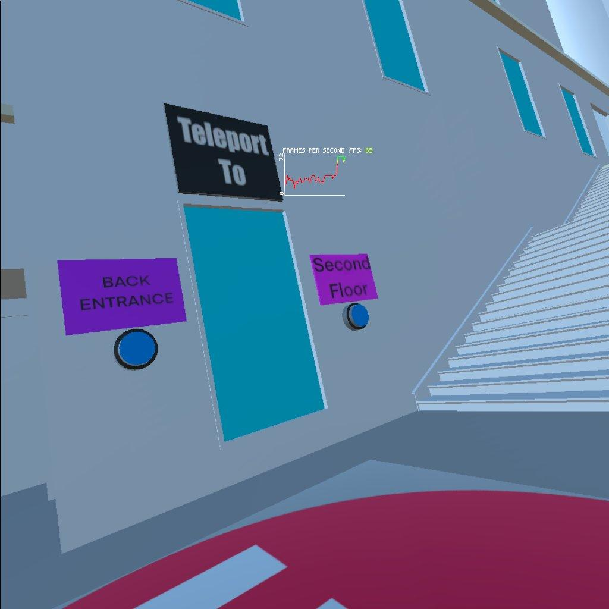
-
Artifact Labels
Custom Texture Using Procreate
Sounds/Music Citations
-
PopCorn Popping Sound
Link : https://www.youtube.com/watch?v=f7gc7oHPfs0
-
Ding Sound
Link : https://www.youtube.com/watch?v=GVAF07-2Xic
-
Friend Link Me
Performed by Michael KosarinWill Smith Written by Alan MenkenHoward Ashman Produced by Alan MenkenMatt SullivanMitchell LeibGuy RitchieMarc Platt Source: Walt Disney Records
Link : https://www.youtube.com/watch?v=1at7kKzBYxI
-
Arabian Nights Instrumental
Arabian Nights (2019) - Instrumental Performed by Alan MenkenBenj PasekHoward Ashman Justin PaulMichael KosarinWritten byAlan MenkenBenj PasekHoward AshmanJustin Paul Produced by Alan MenkenMatt SullivanMitchell LeibGuy RitchieMarc Platt Source: Walt Disney Records
Link : https://www.youtube.com/watch?v=9jDzEmfv4zM